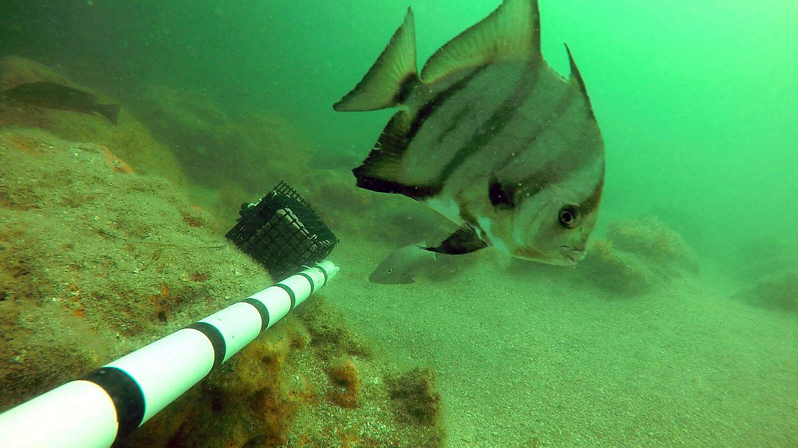

Bay segment | Oyster (acres) | Patchy seagrass (acres) | Continuous seagrass (acres) |
|---|---|---|---|
Old Tampa Bay | 84.6 | 2,037.1 | 2,145.9 |
Hillsborough Bay | 13.0 | 277.4 | 131.3 |
Middle Tampa Bay | 15.1 | 2,969.3 | 4,757.2 |
Lower Tampa Bay | 17.0 | 2,214.7 | 5,411.2 |
Boca Ciega Bay | 59.3 | 1,409.3 | 7,329.9 |
Manatee River | 8.6 | 233.1 | 228.0 |
Terra Ceia Bay | 10.7 | 222.0 | 770.4 |
BH-4
Identify hard bottom communities and avoid impacts
OBJECTIVES:
Identify and protect hard bottom and oyster reef habitats in Tampa Bay. Map and monitor existing oyster reef habitat; develop bay-wide goals for oyster reef habitat creation and protection; monitor animal use of reef habitat; support community-based oyster reef habitat restoration; and support mooring fields and buoys to protect hard bottom habitat.
STATUS:
Ongoing. Action revised from “Restrict impacts to hard bottom communities and evaluate the ecological effects of artificial hard bottom habitat.” New action highlights mapping and restoration efforts since 2006, permitting challenges and need for monitoring of ecological effects of artificial hard bottom and oyster habitats.
BACKGROUND:
Hard bottom habitats in Tampa Bay include fossilized corals, rubble, limestone, other natural “reef-like” material and artificial reefs. They provide important substrate for the attachment of benthic species, including sponges, corals and oysters, and attract and support a diverse assemblage of marine invertebrates and fish, including many recreationally important species.

Oyster reefs are formed by the cumulative buildup of shell material from successive generations of oysters. They occur predominantly in shallow nearshore areas, especially in brackish waters near creek and river mouths. Oyster reefs provide a number of ecological, economic and recreational benefits, including food and habitat for a large number of species. They also can reduce erosion, stabilize shorelines and improve water quality.
Hard bottom and oyster reefs in Tampa Bay are protected submerged habitats under state and federal wetland regulations. They are considered Essential Fish Habitat and afforded additional federal protections under the Magnuson-Stevens Fishery Conservation and Management Act. Both habitats are relatively rare and sparsely distributed in the bay.
In 2016 the Southwest Florida Water Management District (SWFWMD) mapped an estimated 166 acres of oyster reef in Tampa Bay. SWFWMD includes remote oyster reef mapping as part of their biannual aerial seagrass surveys in Tampa Bay. Previous mapping efforts have highlighted the difficulty in assessing overall oyster habitat extent in the bay, especially along mangrove and hardened shorelines (O’Keefe, Arnold, and Reed 2006).
O’Keefe, K., W. Arnold, and D. Reed. 2006. “Tampa Bay Oyster Mapping and Assessment.” 03-06. St. Petersburg, Florida: Tampa Bay Estuary Program. https://drive.google.com/file/d/1RuyxG6OnXXnNH0FynEtc8EXD249qGn8G/view?usp=drivesdk.
SWFWMD has completed two other projects to locate, characterize and create finer-scale thematic maps of hard bottom and oyster reef habitats in Tampa Bay. The first project, funded by the Tampa Bay Environmental Restoration Fund (TBERF), focused on the southeast region of Tampa Bay from the mouth of the Little Manatee River to the mouth of Terra Ceia bay. The second project, funded by SWFWMD, focused on Old Tampa Bay, areas adjacent to MacDill Air Force Base, Terra Ceia Bay and the mouth of the Manatee River. Additionally, TBEP was awarded a grant from Pinellas County’s settlement funds from the Deepwater Horizon accident to map hard bottom habitat in bay waters offshore southeastern Pinellas County, using similar techniques as were employed by SWFWMD. Results of this work (completed in 2019) added to the mapped extent of these habitats within the bay (CSA Ocean Sciences, Inc. 2019). These mapping projects included field surveys utilizing a combination of side scan sonar, underwater video and ground truthing. Ground truthing will categorize biological communities associated with various hard bottom habitats, bathymetric relief, natural or artificial hard bottom and contiguous reef or hard rubble.
CSA Ocean Sciences, Inc. 2019. “Tampa Bay Hard Bottom Mapping Project.” 08-19. St. Petersburg, Florida: Tampa Bay Estuary Program. https://drive.google.com/file/d/1cVe4VUAIXKeaoQiT-hQt-GxZajwKjksk/view?usp=drivesdk.

The Oyster Habitat Suitability Index (or HSI) was developed to guide restoration efforts by identifying priority areas in Tampa Bay that can support long-term restoration. Environmental factors including sediment, salinity, depth, seagrass, and channel locations help to identify appropriate locations for oyster reef placement. The HSI combines these multiple data layers to create a scored map that indicates locations where restoration may be successful.
Protecting and restoring hard bottom and oyster reef habitats will contribute to improved water quality, increased habitat and shoreline stabilization in Tampa Bay. While restoration of all lost hard bottom and oyster reef habitats in Tampa Bay is unrealistic, an alternative is to maintain the existing mapped extent of these habitats (see Actions BH-1 and BH-8). A 2021 study of how the location, elevation, and substrate type of a constructed oyster reef influenced oyster population characteristics found a higher elevation reefs had higher live oyster density, lower gastropod predator density and less sediment burial (Adams et al. 2021). However, the oysters that did survive on low elevation reefs were larger in size, reflecting longer feeding durations and enhanced growth potential.
Adams, C. Scott, Kara R. Radabaugh, Savanna Hearne, Emily Ritz, Gary E. Raulerson, Serra Herndon, and and Ryan P. Moyer. 2021. “Oyster Density on Varying Artificial Substrates and Reef Elevations in Tampa Bay, Florida (USA).” 16-21. St. Petersburg, Florida: Tampa Bay Estuary Program. https://drive.google.com/file/d/1fBuHdbrydQwSZaHWz0Up3YTCrR1Gadzu/view?usp=sharing.
Several initiatives are working to create or restore hard bottom and oyster reef habitats in the bay, including building reefs with oyster shells collected from restaurants in Manatee County (Gulf Coast Oyster Recycling and Renewal) and installing vertical oyster gardens from docks. Tampa Bay Watch is working with community volunteers to create and enhance oyster reefs by deploying clean, fossilized oyster shells as a base upon which live oysters can settle and form natural reefs. Since 2001, more than 4,700 volunteers have created almost 14,000 linear feet of oyster reef in the bay — using more than 1,400 tons of oyster shell. Other projects have installed reef balls to support shoreline stabilization and oyster reef formation along the MacDill Air Force Base peninsula, the Alafia Banks and the Kitchen.
Audubon Florida created more than 2,000 linear feet of new oyster reef to improve water quality, facilitate growth of native salt marsh and mangroves and slow erosion of the Richard T. Paul Alafia Bank Bird Sanctuary. The Sanctuary is one of the largest and most diverse waterbird colonies in the continental United States, but is threatened by erosion from boat wakes and storm waves (see Action FW-6).
The Artificial Reef Program of the Environmental Protection Commission of Hillsborough County (EPCHC) manages eight artificial reefs in Tampa Bay that are popular angling spots. By providing hard bottom substrates and associated biological communities, artificial reefs increase biological diversity and productivity. A 2005 study found that 385 species used EPCHC’s reefs, including popular sport fish like grouper, tarpon and snook, as well as a variety of crabs, shrimp, mollusks and worms. EPCHC will begin a 10-year update of their original study in 2016, enlisting observations from commercial and recreational fishermen. Research on artificial reef design and associated community structure may yield valuable management information.
Note
Fishermen and divers who use Hillsborough County’s eight artificial reef sites spend more than $30 million in the county annually, according to a 2009 study by Florida Sea Grant.
Threats to hard bottom and oyster reef habitats and their biological communities include changes in sediment accretion and removal from dredge and fill operations, channel modifications and harbor expansions, sea level rise and ocean acidification, boat groundings, cumulative damage from anchors, overfishing, harmful algal blooms, invasive species, parasites and pathogens.

The invasive Asian Green Mussel (Perna viridis) is a noteworthy threat that should be monitored on both natural and artificial reefs in Tampa Bay. Green mussels were first observed in Tampa Bay in 1999 and are known to foul boat hulls, clog power plant cooling water intake structures and displace native oyster and mussel populations. After initial rapid population growth in the bay, anecdotal evidence suggests that populations have stabilized — although the mechanism of their control is unknown.
Construction of the Gulfstream natural gas pipeline in Tampa Bay impacted nearly 20 acres of hard bottom habitat. Impacts were mitigated by installing shallow-water limestone reefs and transplanting soft corals and sponges. The low-relief limestone reefs were quickly colonized by plants and animals; however, the transplants of soft corals and sponges were largely unsuccessful. A hydraulic fracture, or “frac out,” that inadvertently released drilling fluids to the surface during the horizontal drilling also impacted hard bottom.
Additional hard bottom impacts are likely in Tampa Bay as a result of dredging associated with future harbor improvements. “Frac outs” may occur during installation of underwater communications cables or other pipelines in the future.

Impacts to hard bottom and oyster reef habitats are not easily mitigated, and greater recognition and protection of these rare habitats is needed. Therefore, the effectiveness of current permitting and mitigation rules in preserving hard bottom and oyster reef habitats throughout the bay warrants evaluation.